Hornby Island
a web-inspired road trip☟ scroll down ☟
New Message
My childhood friend Justin sent me an article this summer about an island three ferry rides away with turquoise waters.
I couldn’t imagine how it could be in BC.
We both had the weekend off (which was rare) and figured it was now or never so we anticipated going in the coming weekend.
I couldn’t imagine how it could be in BC.
We both had the weekend off (which was rare) and figured it was now or never so we anticipated going in the coming weekend.
Friday Morning
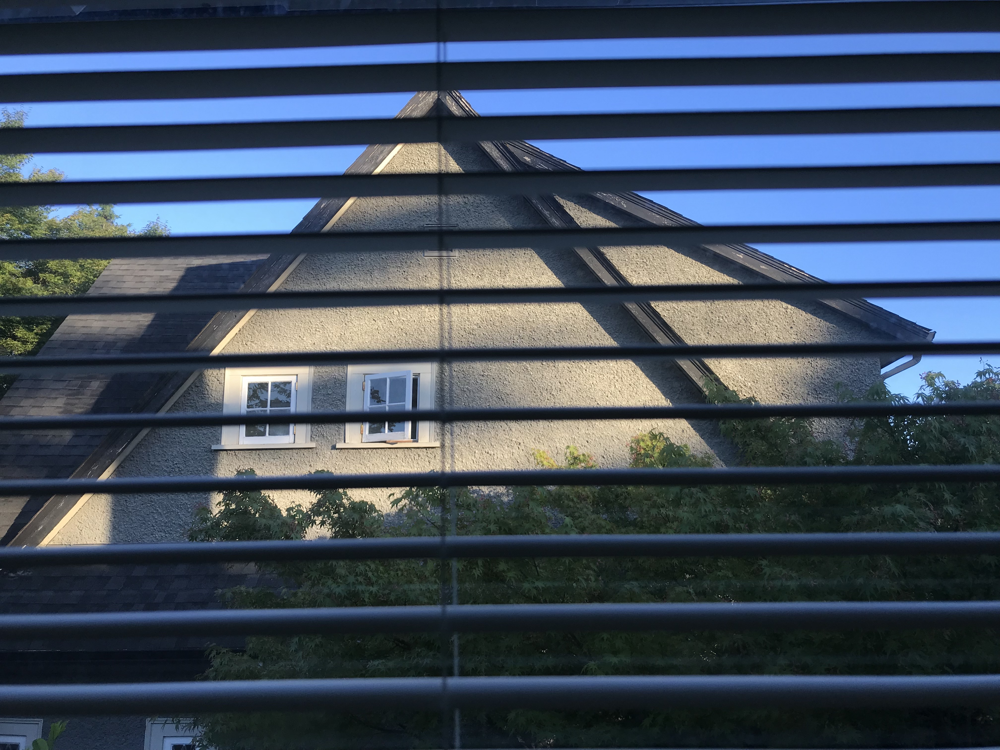
Over the week we half-heartedly looked for campsites and planned our meals but with both of us working full-time these tasks carried on onto the ferry.
After my shift at the restaurant, I got packing – making sure not to forget my tent, flashlights, clothes, bathing suit, hiking boots, and two sleeping mats. By the time I checked the oil, wiper fluid, tire pressure, and fuel levels it was 2:00AM.
After my shift at the restaurant, I got packing – making sure not to forget my tent, flashlights, clothes, bathing suit, hiking boots, and two sleeping mats. By the time I checked the oil, wiper fluid, tire pressure, and fuel levels it was 2:00AM.
Four hours later the alarm went off and it was time to leave. I threw everything into the trunk, picked up Justin, and caught the 7:45AM ferry from Tsawassen.

Ferry 1
After driving onto the boat and parking in our directed row I felt relieved. We had an hour and forty-five minutes to relax, enjoy the view, and find a place to sleep in the evening.
We grabbed a seat by the window with our hot breakfasts and started to make calls.
It soon became clear that we wouldn’t be able to stay on Hornby or Denman Island – campsites were booked months in advance.
We grabbed a seat by the window with our hot breakfasts and started to make calls.
It soon became clear that we wouldn’t be able to stay on Hornby or Denman Island – campsites were booked months in advance.
Shit.
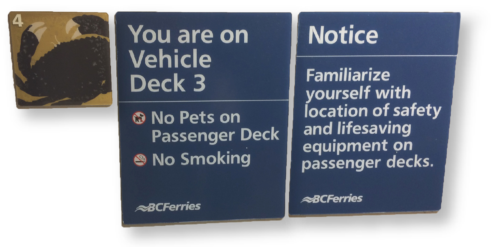
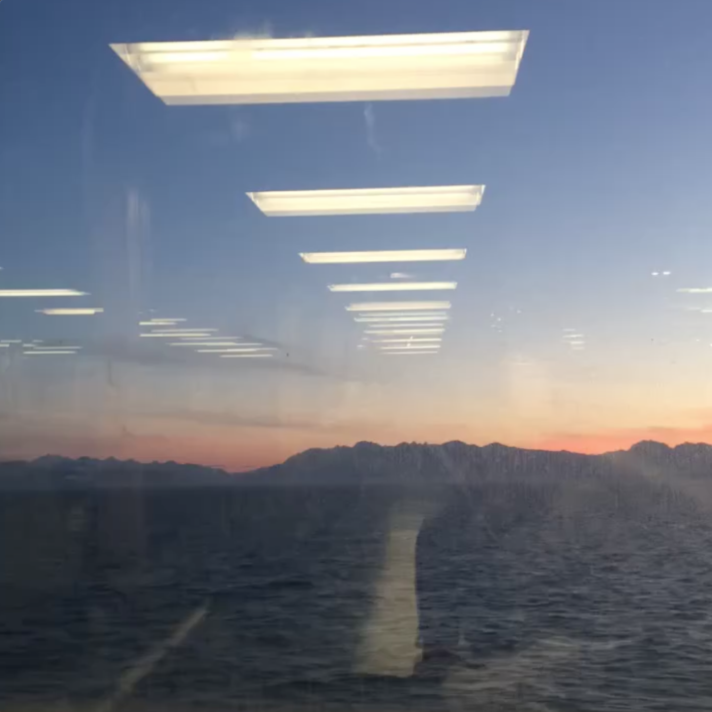
Nanaimo, BC
After searching more, we chose the Qualicum First Nation Campground, an hour north of Nanaimo, on the basis that it had many vacancies and was first come first serve.
Even though our plans shifted, we were excited to get going. It was still early in the day and we weren’t going to put $150+ to waste!
Ferries to Denman island leave practically every hour so we had time to go for a hike.
We conducted a quick google search and chose Englishman River Falls.
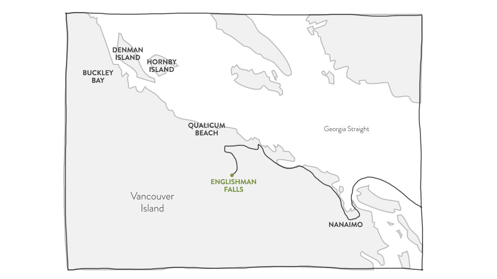
Even though our plans shifted, we were excited to get going. It was still early in the day and we weren’t going to put $150+ to waste!
Ferries to Denman island leave practically every hour so we had time to go for a hike.
We conducted a quick google search and chose Englishman River Falls.
Englishman
River Falls
River Falls
According to Wikipedia, it gained its name from a First Nations legend mentioning a skeleton of a white man being found around the waterfall.
We came just before peak season for tourists and we were surrounded only by a handful of people.
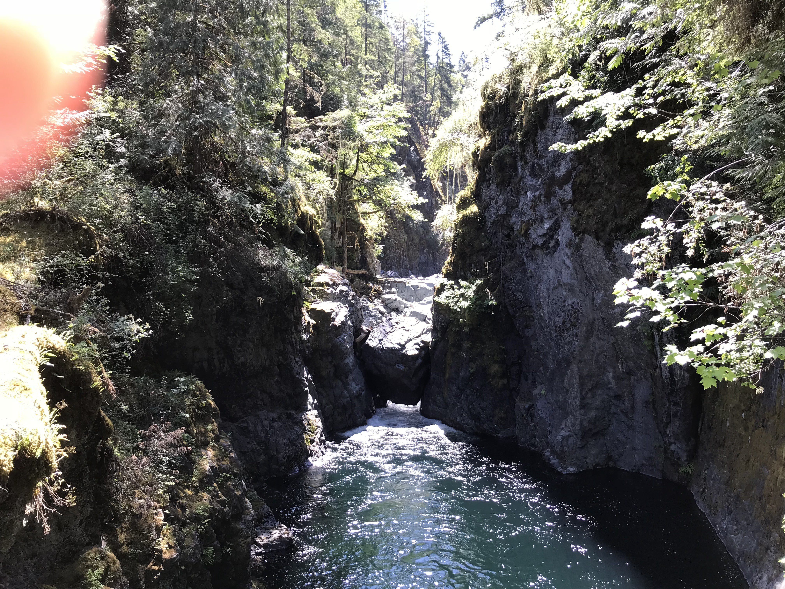
We came just before peak season for tourists and we were surrounded only by a handful of people.
The Water
Felt Glacial
Felt Glacial
It was incredibly beautiful.
After quickly changing into our bathing suits
behind a bush we couldn’t help but take a dip.
After quickly changing into our bathing suits
behind a bush we couldn’t help but take a dip.
I wanted to get a picture from the view of this rock so I put my phone in my mouth and swam across.
We both took turns swimming to the wedged rock and went halfway. We were nervous of our muscles potentially seizing up on the way back.
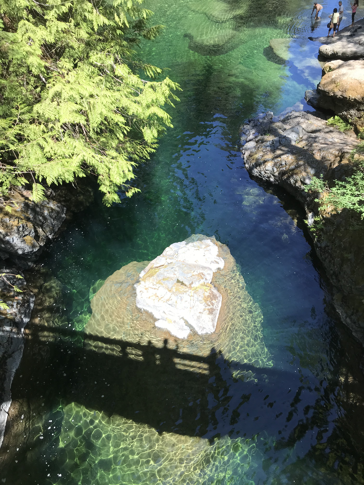
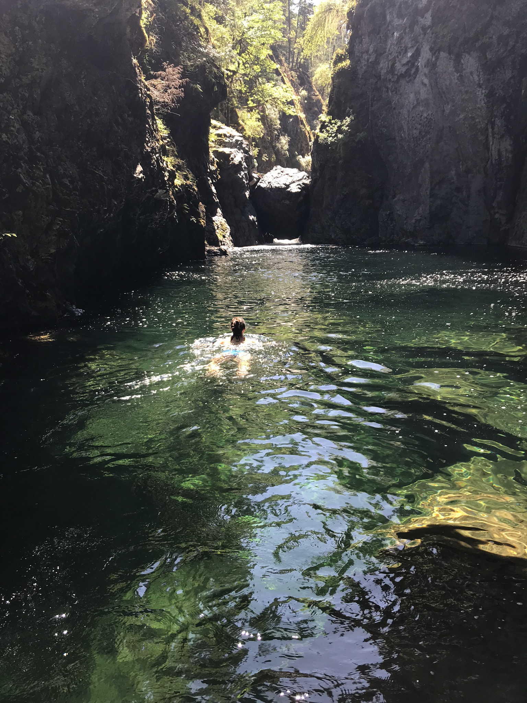
Fanny Bay
Oysters
Oysters
We cracked open some Electric Unicorns (an amazing local beer) and napped which dried us off pretty quick.
On our way to the next ferry terminal we stopped by the campground to pitch our tent, pay, and get keys to entrance gate.
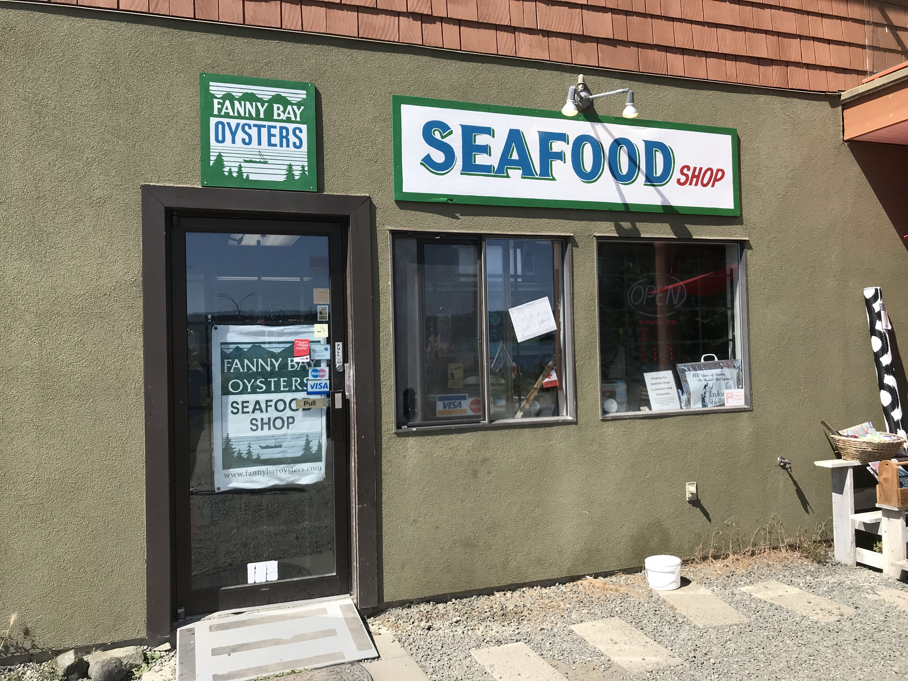
On our way to the next ferry terminal we stopped by the campground to pitch our tent, pay, and get keys to entrance gate.
20 minutes later we made it to Buckley Bay, where my dad’s favourite downtown Oyster Bar, Fanny Bay Oysters, harvests their oysters. I snapped this picture and sent it off to him.
Ferry 2 & 3
 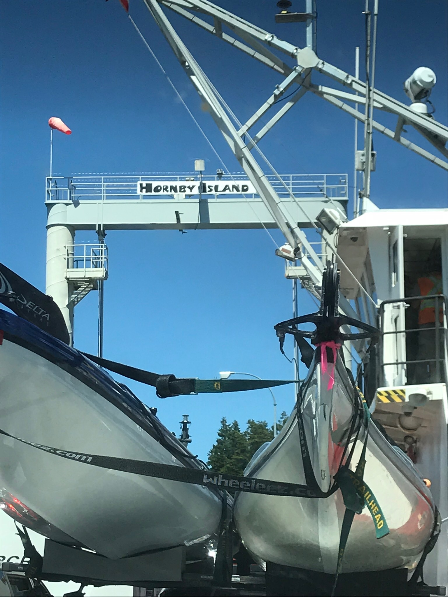
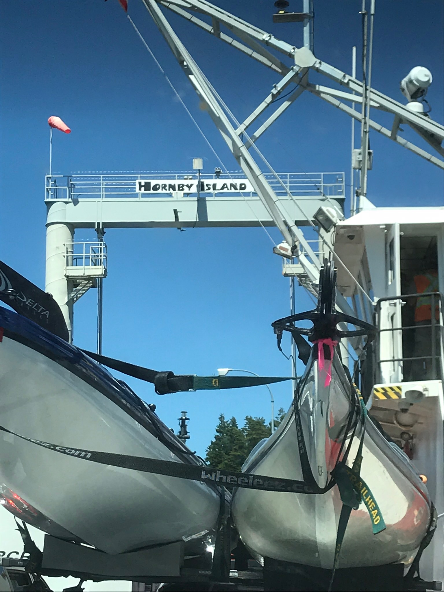
On the ferry we met some friendly locals who have made this trip countless times before.
They happily drew on our map and declared our experience of Hornby incomplete without a trip to Mount Geoffrey Escarpment.
Justin suggested going before the beach – I agreed.
We docked 10 minutes later and followed the same line of cars through what seemed like the only road on Denman Island and together we rolled onto the next ferry.
They happily drew on our map and declared our experience of Hornby incomplete without a trip to Mount Geoffrey Escarpment.
Justin suggested going before the beach – I agreed.
We docked 10 minutes later and followed the same line of cars through what seemed like the only road on Denman Island and together we rolled onto the next ferry.
Hornby Island
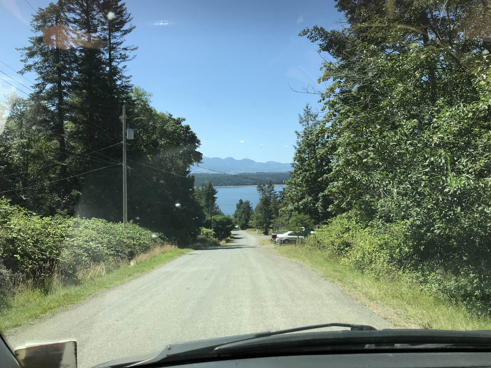
10 short minutes later and we made it!
The island immediately feels small and quaint. Neither of us looked too closely at the map’s scale and when it seemed like it would take 20 minutes to get to the trailhead, it was only 5 minutes from the terminal.
Once Google Maps said we had arrived, it was deserted. We triple-checked the location, laced our hiking boots, and entered the trailhead.
The island immediately feels small and quaint. Neither of us looked too closely at the map’s scale and when it seemed like it would take 20 minutes to get to the trailhead, it was only 5 minutes from the terminal.
Once Google Maps said we had arrived, it was deserted. We triple-checked the location, laced our hiking boots, and entered the trailhead.
Evergreens &
Ocean Air
Ocean Air
It's so
quiet.
 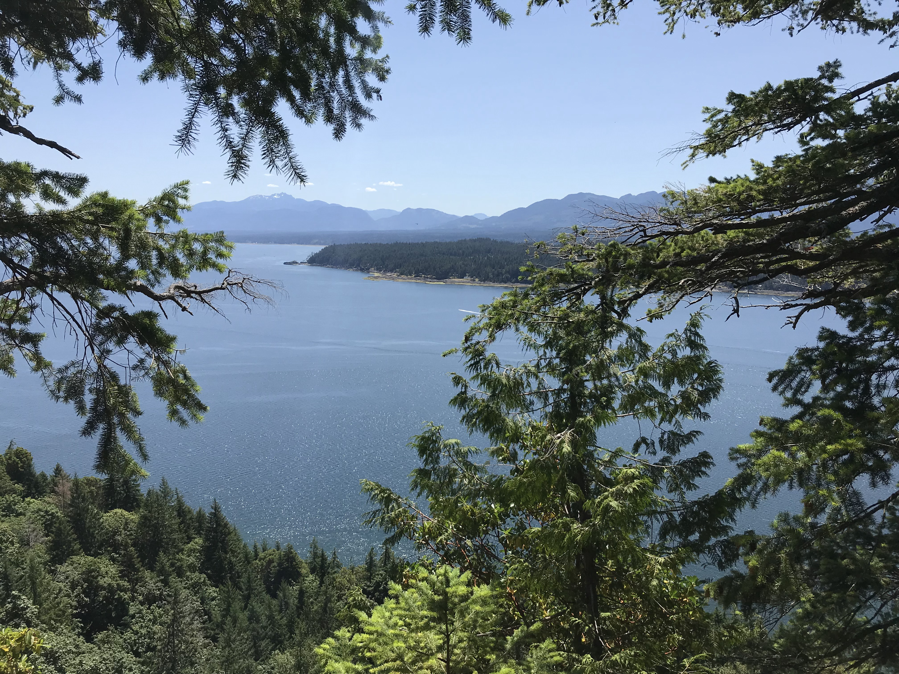
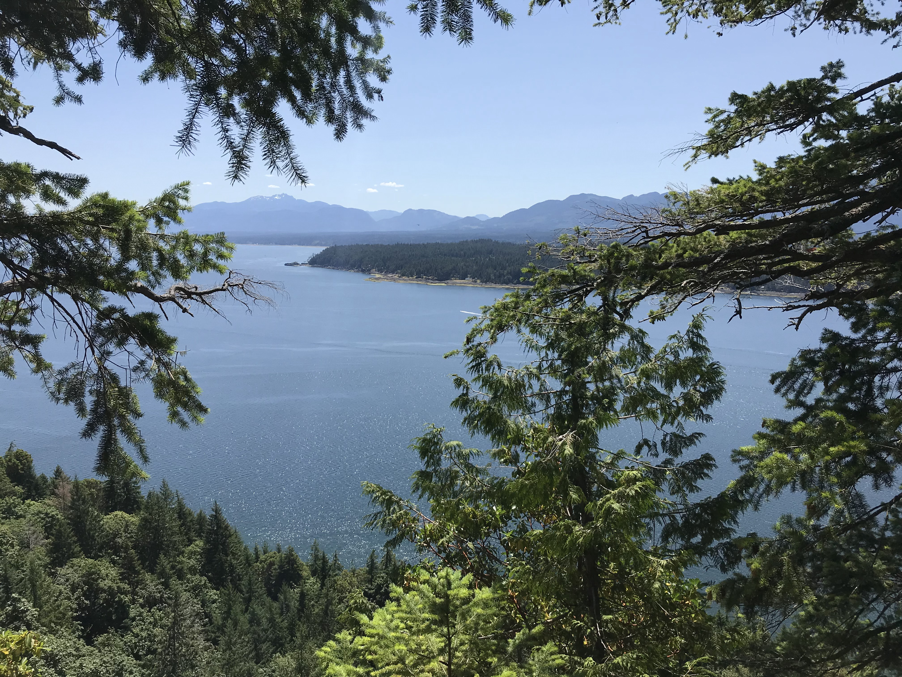
Onwards!
We could have stayed up there all day but the beach awaited.
After a quick stop at the esteemed Cardboard House Bakery for snacks, we were on our way.
After a quick stop at the esteemed Cardboard House Bakery for snacks, we were on our way.
Tribune Bay
We followed a narrow dirt road to a grass patch/parking lot that was full. One sketchy three-point turn later we ofund ourselves parked off the side of the path under the shade of a tree.
It's not the sandy tropical paradise that the internet promised but it's beautiful all the same.
It's not the sandy tropical paradise that the internet promised but it's beautiful all the same.
The ground was divided neatly by texture: grass > driftwood > rocks > scorching hot sand > warm ocean water.
Additionally, there were a surprising number of nudists.
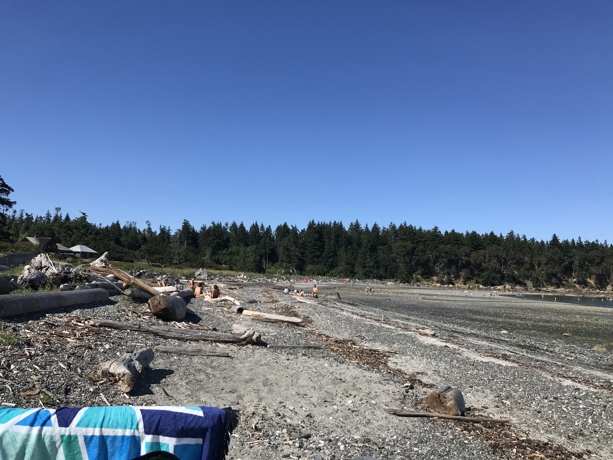
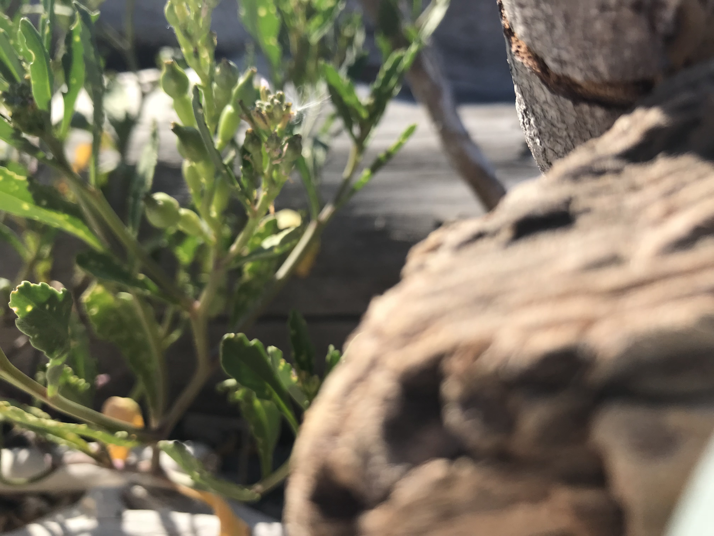
Additionally, there were a surprising number of nudists.
Return
We swam, tanned, drank, wandered, and once again dozed off…
only to wake up semi-submerged. The water creeped up 10 meters in half and hour!
only to wake up semi-submerged. The water creeped up 10 meters in half and hour!
After checking for water damage to our belongings, my friend brought up a sandwich board he saw near Nanaimo reading:
“Paddleboard Rentals $20/hr”.
That's not a bad rate! To be on the safe side we took the second-last ferries back to Nanaimo.
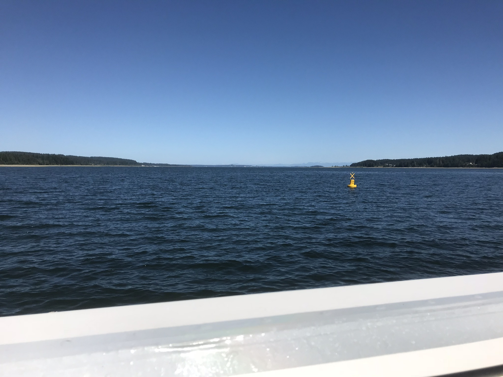
“Paddleboard Rentals $20/hr”.
That's not a bad rate! To be on the safe side we took the second-last ferries back to Nanaimo.
Dragonfly
Paddleboards
Paddleboards
Luckily we squeezed on both ferries as one of the last cars.
We found the shack easily and chatted with the owner, while eating food from a truck in the same lot.
Sunset was still over an hour away so we got coconut soft serve by the shore and when the sun started dipping, we got going.
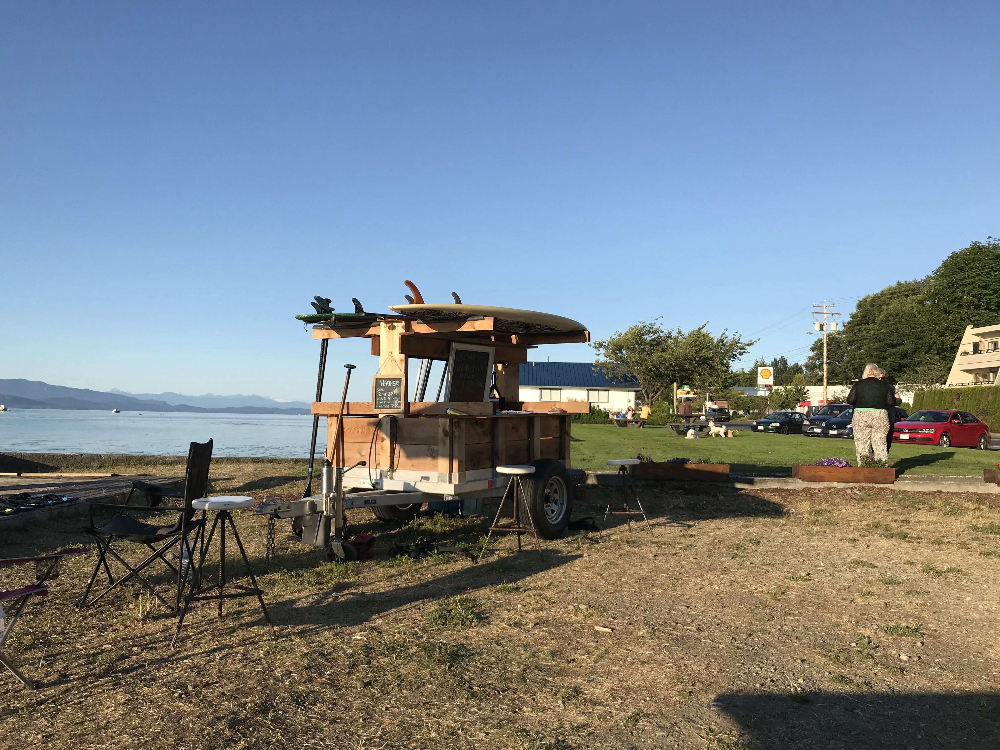
We found the shack easily and chatted with the owner, while eating food from a truck in the same lot.
Sunset was still over an hour away so we got coconut soft serve by the shore and when the sun started dipping, we got going.
Smooth
as Glass
The water was so still. We glided effortlessly, piercing the surface.
When lying down, I felt impossibly small. I couldn't open my eyes wide enough to comprehend the empty-space that engulfed me.
On the walk back onto the shore I reminisced about sunset hues, cool salt water, and the slashes of nearby otters.
We sat in the car after layering up and still facing the water, watched the remaining colours dim.
Back at the campground, we brushed our teeth under the stars and fell fast asleep to the crackling of neighbouring campfires.
We sat in the car after layering up and still facing the water, watched the remaining colours dim.
Back at the campground, we brushed our teeth under the stars and fell fast asleep to the crackling of neighbouring campfires.